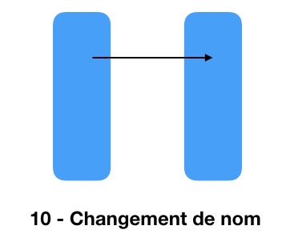
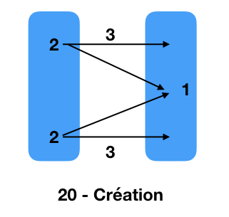
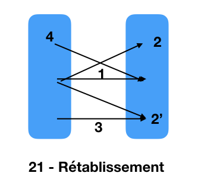
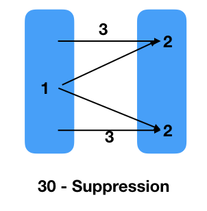
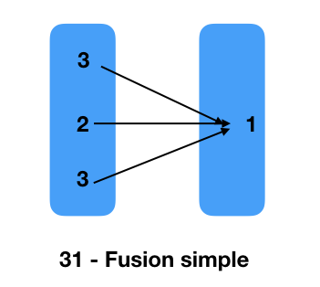
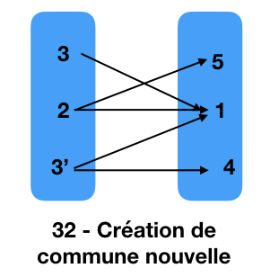
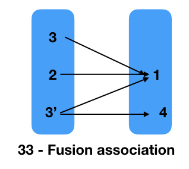
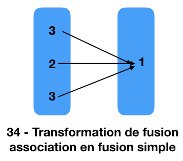
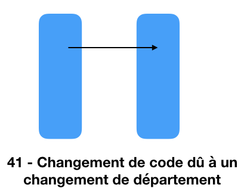

Spécifications du fichier des mouvements sur les communes
Dans ce document, le fichier des mouvements est considéré comme un graphe des noeuds avant (av) vers les noeuds après (ap).
Chaque type de mouvement est spécifié par un motif de sous-graphe dans ce graphe.
10 - Changement de nom
Chaque arc correspond à un Changement de nom d'une entité. Le type et le code doivent être identiques avant et après
cad:
(typecom_ap==typecom_av) && (com_av==com_ap)
Note: Il existe de nombreuses non-conformités ; le second exemple ci-dessous en fournit un exemple.

Exemples
| date_eff | 2018-11-08 |
| mod | 10 - Changement de nom |
| nol | typecom_av | com_av | libelle_av | typecom_ap | com_ap | libelle_ap |
| 1375 | COM | 04063 | Corbières | COM | 04063 | Corbières-en-Provence |
| 1376 | COM | 16134 | Exideuil | COM | 16134 | Exideuil-sur-Vienne |
| 1377 | COM | 35306 | Saint-Père | COM | 35306 | Saint-Père-Marc-en-Poulet |
| 1378 | COM | 45110 | Courcelles | COM | 45110 | Courcelles-le-Roi |
| 1379 | COM | 51086 | Breuil | COM | 51086 | Breuil-sur-Vesle |
| 1380 | COM | 59004 | Aix | COM | 59004 | Aix-en-Pévèle |
| 1381 | COM | 70472 | Saint-Remy | COM | 70472 | Saint-Rémy-en-Comté |
| 1382 | COM | 79066 | Champdeniers-Saint-Denis | COM | 79066 | Champdeniers |
| 1383 | COM | 84033 | Castellet | COM | 84033 | Castellet-en-Luberon |
| 1384 | COM | 93070 | Saint-Ouen | COM | 93070 | Saint-Ouen-sur-Seine |
| 1385 | COM | 95306 | Herblay | COM | 95306 | Herblay-sur-Seine |
|
Chaque ligne du tableau correspond à un changement de nom
| date_eff | 2007-04-01 |
| mod | 10 - Changement de nom |
| nol | typecom_av | com_av | libelle_av | typecom_ap | com_ap | libelle_ap |
| 5625 | COM | 74220 | Reignier | COMA | 74113 | Ésery |
| 5626 | COMA | 74113 | Ésery | COM | 74220 | Reignier-Ésery |
| 5627 | COM | 74220 | Reignier | COM | 74220 | Reignier-Ésery |
|
Ces lignes sont considérées comme des non-conformités.
20 - Création
Chaque mouvement est défini autour de la commune créée définie par un noeud d'arrivée
ayant plus d'un arc entrant (1).
Chaque noeud de départ de ces arcs (2) définit une commune contributrice avant le mouvement.
En dehors de ces arcs, chaque commune contributrice correspond à un arc avant/après (3).
Note: il n'existe que 6 créations qui interviennent à des dates différentes.

Exemples
| date_eff | 1989-02-15 |
| mod | 20 - Création |
| nol | typecom_av | com_av | libelle_av | typecom_ap | com_ap | libelle_ap |
| 6173 | COM | 38422 | Saint-Martin-d'Uriage | COM | 38422 | Saint-Martin-d'Uriage |
| 6174 | COM | 38478 | Séchilienne | COM | 38478 | Séchilienne |
| 6175 | COM | 38529 | Vaulnaveys-le-Haut | COM | 38529 | Vaulnaveys-le-Haut |
| 6176 | COM | 38422 | Saint-Martin-d'Uriage | COM | 38567 | Chamrousse |
| 6177 | COM | 38478 | Séchilienne | COM | 38567 | Chamrousse |
| 6178 | COM | 38529 | Vaulnaveys-le-Haut | COM | 38567 | Chamrousse |
|
Création de Chamrousse à partir des communes contributrices de
Saint-Martin-d'Uriage, Séchilienne et Vaulnaveys-le-Haut.
21 - Rétablissement - Je préfère plutôt parler de scission
La commune/ARM se scindant (appelée source) (1) est identifiée par l'arc satisfaisant le critère
(typecom_av in {'COM','ARM'}) && (typecom_ap==typecom_av) && (com_av==com_ap)
Les autres arcs partant de l'état avant de la source identifient les entités concernées (2 et 2').
Soit l'entité est créée ce qui est défini par l'absence d'autre arc y arrivant (2),
soit elle préexiste et est modifiée (2') et cet arc (3) définit ses états avant/après.
En outre, un arc peut partir d'un autre noeud et arriver sur l'état après de la source (4).
Cas particulier:
- scission le 12/8/1964 du 5ème Ardt de Lyon pour créer le 9ème

Exemples
| date_eff | 1949-12-14 |
| mod | 21 - Rétablissement |
| nol | typecom_av | com_av | libelle_av | typecom_ap | com_ap | libelle_ap |
| 12974 | COM | 17411 | Saint-Trojan-les-Bains | COM | 17411 | Saint-Trojan-les-Bains |
| 12975 | COM | 17411 | Saint-Trojan-les-Bains | COM | 17485 | Le Grand-Village-Plage |
|
Un exemple simple: Saint-Trojan-les-Bains (17411) se scinde en 2 pour créer Le Grand-Village-Plage (17485).
| date_eff | 2019-12-31 |
| mod | 21 - Rétablissement |
| nol | typecom_av | com_av | libelle_av | typecom_ap | com_ap | libelle_ap |
| 17 | COM | 14712 | Saline | COMA | 14114 | Bures-sur-Dives |
| 18 | COMD | 14666 | Sannerville | COM | 14666 | Sannerville |
| 19 | COMD | 14712 | Troarn | COM | 14712 | Troarn |
| 20 | COM | 14712 | Saline | COM | 14666 | Sannerville |
| 21 | COM | 14712 | Saline | COM | 14712 | Troarn |
|
Un autre plus complexe: Saline (14712) se scinde en se renommant Troarn et en créant
la commune associée de Bures-sur-Dives (14114) ;
cette scission entraîne la transformation de la commune déléguée de Sannerville (14666) en commune simple
et la disparition de la commune déléguée de Troarn.
| date_eff | 1964-08-12 |
| mod | 21 - Rétablissement |
| nol | typecom_av | com_av | libelle_av | typecom_ap | com_ap | libelle_ap |
| 11992 | ARM | 69385 | Lyon 5e Arrondissement | ARM | 69385 | Lyon 5e Arrondissement |
| 11993 | ARM | 69385 | Lyon 5e Arrondissement | ARM | 69389 | Lyon 9e Arrondissement |
|
Dernier exemple de la scission du 5ème Ardt de Lyon pour créer le 9ème.
30 - Suppression
La commune supprimée est le noeud de départ ayant plus d'un arc sortant (1).
Chaque noeud d'arrivée de ces arcs définit une commune réceptrice après le mouvement (2).
En dehors de ces arcs, chaque commune réceptrice correspond à un arc avant/après (3).
Note: il n'existe que 6 suppressions qui interviennent à des dates différentes.

Exemples
| date_eff | 1968-03-02 |
| mod | 30 - Suppression |
| nol | typecom_av | com_av | libelle_av | typecom_ap | com_ap | libelle_ap |
| 11008 | COM | 08203 | Guignicourt-sur-Vence | COM | 08203 | Guignicourt-sur-Vence |
| 11009 | COM | 08227 | Hocmont | COM | 08203 | Guignicourt-sur-Vence |
| 11010 | COM | 08227 | Hocmont | COM | 08454 | Touligny |
| 11011 | COM | 08454 | Touligny | COM | 08454 | Touligny |
|
Hocmont (08227) est supprimée et son territoire est réparti
dans Guignicourt-sur-Vence (08203) et Touligny (08454).
31 - Fusion simple
Chaque mouvement de fusion simple s'effectue autour d'un chef-lieu défini comme un noeud d'arrivée de type COM
ayant plus d'un arc entrant (1).
Parmi les noeuds de départ de ces arcs, un porte le même code que le noeud d'arrivée, c'est l'état avant du chef-lieu.
Les autres noeuds de départ correspondent aux entités fusionnées.
Cas particulier:

Exemples
| date_eff | 2006-09-01 |
| mod | 31 - Fusion simple |
| nol | typecom_av | com_av | libelle_av | typecom_ap | com_ap | libelle_ap |
| 5641 | COM | 79013 | Argenton-Château | COM | 79013 | Argenton-les-Vallées |
| 5642 | COM | 79037 | Boësse | COM | 79013 | Argenton-les-Vallées |
| 5643 | COM | 79305 | Sanzay | COM | 79013 | Argenton-les-Vallées |
|
| date_eff | 1947-08-27 |
| mod | 31 - Fusion simple |
| nol | typecom_av | com_av | libelle_av | typecom_ap | com_ap | libelle_ap |
| 13083 | COM | 14485 | Ouilly-le-Basset | COM | 14764 | Pont-d'Ouilly |
| 13084 | COM | 14612 | Saint-Marc-d'Ouilly | COM | 14764 | Pont-d'Ouilly |
|
Cas particulier de création du nouveau code 14764 par cette fusion ;
il parait impossible de savoir laquelle des 2 est chef-lieu.
32 - Création de commune nouvelle - il peut aussi s'agir d'une modification de commune nouvelle
Chaque mouvement de création/modification de commune nouvelle s'effectue autour d'un chef-lieu défini
comme un noeud d'arrivée de type COM ayant plus d'un arc entrant (1).
Parmi les noeuds de départ de ces arcs, un porte le même code que le noeud d'arrivée (2),
c'est l'état avant du chef-lieu. NON !!!!!
Par ailleurs, parmi ces noeuds de départ, certains ont un autre arc sortant (2 et 3') dont le noeud d'arrivée
définit une commune déléguée (respt. 5 et 4) ;
d'autres n'ont pas d'autre arc sortant (3), ce sont des communes fusionnées.

Exemples
| date_eff | 2019-03-01 |
| mod | 32 - Création de commune nouvelle |
| nol | typecom_av | com_av | libelle_av | typecom_ap | com_ap | libelle_ap |
| 22 | COM | 45287 | Saint-Loup-de-Gonois | COMD | 45287 | Saint-Loup-de-Gonois |
| 23 | COM | 45287 | Saint-Loup-de-Gonois | COM | 45307 | La Selle-sur-le-Bied |
| 24 | COM | 45307 | La Selle-sur-le-Bied | COM | 45307 | La Selle-sur-le-Bied |
|
Le chef-lieu est La Selle-sur-le-Bied (45307), parmi les 2 communes concernées seule Saint-Loup-de-Gonois
(45287) donne lieu à la création d'une commune déléguée.
| date_eff | 2019-02-28 |
| mod | 32 - Création de commune nouvelle |
| nol | typecom_av | com_av | libelle_av | typecom_ap | com_ap | libelle_ap |
| 25 | COM | 21183 | Collonges-lès-Premières | COM | 21183 | Collonges-et-Premières |
| 26 | COM | 21183 | Collonges-lès-Premières | COMD | 21183 | Collonges-lès-Premières |
| 27 | COM | 21507 | Premières | COM | 21183 | Collonges-et-Premières |
| 28 | COM | 21213 | Crimolois | COMD | 21213 | Crimolois |
| 29 | COM | 21213 | Crimolois | COM | 21452 | Neuilly-Crimolois |
| 30 | COM | 21452 | Neuilly-lès-Dijon | COM | 21452 | Neuilly-Crimolois |
| 31 | COM | 21452 | Neuilly-lès-Dijon | COMD | 21452 | Neuilly-lès-Dijon |
| 32 | COM | 21507 | Premières | COMD | 21507 | Premières |
|
Création de 2 communes nouvelles, chacune avec 2 communes déléguées.
33 - Fusion association
Le motif de Fusion-association est similaire à celui de la Création de commune nouvelle avec 2 différences
(a) que les noeuds d'arrivée (4) sont des communes associées et non des communes déléguées et
(b) que le chef-lieu ne peut donner lieu à une commune associée (absence du 5).

Exemples
| date_eff | 2010-12-09 |
| mod | 33 - Fusion association |
| nol | typecom_av | com_av | libelle_av | typecom_ap | com_ap | libelle_ap |
| 5553 | COM | 59183 | Dunkerque | COM | 59183 | Dunkerque |
| 5554 | COM | 59248 | Fort-Mardyck | COM | 59183 | Dunkerque |
| 5555 | COMA | 59380 | Mardyck | COM | 59183 | Dunkerque |
| 5556 | COM | 59540 | Saint-Pol-sur-Mer | COM | 59183 | Dunkerque |
| 5557 | COM | 59248 | Fort-Mardyck | COMA | 59248 | Fort-Mardyck |
| 5558 | COMA | 59380 | Mardyck | COMA | 59380 | Mardyck |
| 5559 | COM | 59540 | Saint-Pol-sur-Mer | COMA | 59540 | Saint-Pol-sur-Mer |
|
34 - Transformation de fusion association en fusion simple
Chaque mouvement de Transformation de fusion association en fusion simple s'effectue autour d'un chef-lieu défini
par un arc ayant un noeud de départ (2) et un noeud d'arrivée (1) tous les 2 de type COM.
Les autres noeuds de départ des arcs arrivant au noeud d'arrivée (1) du chef-lieu correspondent aux entités fusionnées (3).
Note: Le mouvement peut s'appliquer aussi à une commune nouvelle et pas uniquement à une fusion association.

Exemples
| date_eff | 2020-01-01 |
| mod | 34 - Transformation de fusion association en fusion simple |
| nol | typecom_av | com_av | libelle_av | typecom_ap | com_ap | libelle_ap |
| 1 | COMD | 16296 | Saint-Amant-de-Bonnieure | COM | 16300 | Val-de-Bonnieure |
| 2 | COM | 16300 | Val-de-Bonnieure | COM | 16300 | Val-de-Bonnieure |
| 3 | COMD | 16300 | Saint-Angeau | COM | 16300 | Val-de-Bonnieure |
| 4 | COMD | 16309 | Sainte-Colombe | COM | 16300 | Val-de-Bonnieure |
| 5 | COMD | 24041 | Bézenac | COM | 24087 | Castels et Bézenac |
| 6 | COM | 24087 | Castels et Bézenac | COM | 24087 | Castels et Bézenac |
| 7 | COMD | 24087 | Castels | COM | 24087 | Castels et Bézenac |
| 8 | COM | 24142 | Coux et Bigaroque-Mouzens | COM | 24142 | Coux et Bigaroque-Mouzens |
| 9 | COMD | 24142 | Coux-et-Bigaroque | COM | 24142 | Coux et Bigaroque-Mouzens |
| 10 | COMD | 24298 | Mouzens | COM | 24142 | Coux et Bigaroque-Mouzens |
| 11 | COMD | 33091 | Cantenac | COM | 33268 | Margaux-Cantenac |
| 12 | COM | 33268 | Margaux-Cantenac | COM | 33268 | Margaux-Cantenac |
| 13 | COMD | 79214 | Pouffonds | COM | 79251 | Marcillé |
| 14 | COM | 79251 | Marcillé | COM | 79251 | Marcillé |
| 15 | COMD | 79251 | Saint-Génard | COM | 79251 | Marcillé |
|
| date_eff | 2008-01-01 |
| mod | 34 - Transformation de fusion association en fusion simple |
| nol | typecom_av | com_av | libelle_av | typecom_ap | com_ap | libelle_ap |
| 5598 | COM | 25288 | Fournets-Luisans | COM | 25288 | Fournets-Luisans |
| 5599 | COMA | 25352 | Luisans | COM | 25288 | Fournets-Luisans |
| 5605 | COM | 39049 | Bersaillin | COM | 39049 | Bersaillin |
| 5606 | COMA | 39067 | Le Bouchaud | COM | 39049 | Bersaillin |
| 5607 | COMA | 39580 | Le Viseney | COM | 39049 | Bersaillin |
| 5608 | COM | 42239 | Saint-Jean-Saint-Maurice-sur-Loire | COM | 42239 | Saint-Jean-Saint-Maurice-sur-Loire |
| 5609 | COMA | 42263 | Saint-Maurice-sur-Loire | COM | 42239 | Saint-Jean-Saint-Maurice-sur-Loire |
|
| date_eff | 2018-01-01 |
| mod | 34 - Transformation de fusion association en fusion simple |
| nol | typecom_av | com_av | libelle_av | typecom_ap | com_ap | libelle_ap |
| 1524 | COMA | 14507 | Pleines-Œuvres | COM | 50649 | Pont-Farcy |
| 1525 | COM | 14513 | Pont-Farcy | COM | 50649 | Pont-Farcy |
|
Cas particulier de changement de département de Pont-Farcy après l'intégration de Pleines-Œuvres.
41 - Changement de code dû à un changement de département
Chaque arc correspond à un Changement de nom de code.

Exemples
| date_eff | 2018-01-01 |
| mod | 41 - Changement de code dû à un changement de département |
| nol | typecom_av | com_av | libelle_av | typecom_ap | com_ap | libelle_ap |
| 1492 | COM | 49144 | Freigné | COM | 44225 | Freigné |
|
| date_eff | 2016-12-31 |
| mod | 41 - Changement de code dû à un changement de département |
| nol | typecom_av | com_av | libelle_av | typecom_ap | com_ap | libelle_ap |
| 2833 | COM | 02344 | Gernicourt | COM | 51664 | Gernicourt |
|
50 - Changement de code dû à un transfert de chef-lieu
L'ancien chef-lieu peut être identifié au moyen du critère de sélection suivant:
(typecom_av=='COM') && (typecom_ap=='COMA') && (com_av==com_ap)
le nouveau chef-lieu peut être identifié au moyen du critère de sélection suivant:
(typecom_av=='COMA') && (typecom_ap=='COM') && (com_av==com_ap)
les communes associées restant associées peuvent être identifiées au moyen du critère de sélection suivant:
(typecom_av=='COMA') && (typecom_ap=='COMA') && (com_av==com_ap)
Note: Il n'existe que 2 mvts de ce type.

Exemples
| date_eff | 2014-01-07 |
| mod | 50 - Changement de code dû à un transfert de chef-lieu |
| nol | typecom_av | com_av | libelle_av | typecom_ap | com_ap | libelle_ap |
| 5342 | COMA | 14010 | Ammeville | COMA | 14010 | Ammeville |
| 5343 | COMA | 14067 | Berville | COMA | 14067 | Berville |
| 5344 | COMA | 14234 | Écots | COMA | 14234 | Écots |
| 5345 | COMA | 14295 | Garnetot | COMA | 14295 | Garnetot |
| 5346 | COMA | 14314 | Grandmesnil | COMA | 14314 | Grandmesnil |
| 5347 | COMA | 14363 | Lieury | COMA | 14363 | Lieury |
| 5348 | COMA | 14447 | Montpinçon | COMA | 14447 | Montpinçon |
| 5349 | COMA | 14010 | Ammeville | COM | 14472 | L'Oudon |
| 5350 | COMA | 14067 | Berville | COM | 14472 | L'Oudon |
| 5351 | COMA | 14234 | Écots | COM | 14472 | L'Oudon |
| 5352 | COMA | 14295 | Garnetot | COM | 14472 | L'Oudon |
| 5353 | COMA | 14314 | Grandmesnil | COM | 14472 | L'Oudon |
| 5354 | COMA | 14363 | Lieury | COM | 14472 | L'Oudon |
| 5355 | COMA | 14447 | Montpinçon | COM | 14472 | L'Oudon |
| 5356 | COMA | 14472 | Notre-Dame-de-Fresnay | COM | 14472 | L'Oudon |
| 5357 | COMA | 14624 | Saint-Martin-de-Fresnay | COM | 14472 | L'Oudon |
| 5358 | COM | 14697 | L'Oudon | COM | 14472 | L'Oudon |
| 5359 | COMA | 14624 | Saint-Martin-de-Fresnay | COMA | 14624 | Saint-Martin-de-Fresnay |
| 5360 | COM | 14697 | L'Oudon | COMA | 14697 | Tôtes |
|
| date_eff | 1990-02-01 |
| mod | 50 - Changement de code dû à un transfert de chef-lieu |
| nol | typecom_av | com_av | libelle_av | typecom_ap | com_ap | libelle_ap |
| 6118 | COMA | 14010 | Ammeville | COMA | 14010 | Ammeville |
| 6119 | COMA | 14067 | Berville | COMA | 14067 | Berville |
| 6120 | COMA | 14234 | Écots | COMA | 14234 | Écots |
| 6121 | COMA | 14295 | Garnetot | COMA | 14295 | Garnetot |
| 6122 | COMA | 14314 | Grandmesnil | COMA | 14314 | Grandmesnil |
| 6123 | COMA | 14363 | Lieury | COMA | 14363 | Lieury |
| 6124 | COMA | 14447 | Montpinçon | COMA | 14447 | Montpinçon |
| 6125 | COMA | 14472 | Notre-Dame-de-Fresnay | COMA | 14472 | Notre-Dame-de-Fresnay |
| 6126 | COM | 14624 | L'Oudon | COMA | 14624 | Saint-Martin-de-Fresnay |
| 6127 | COMA | 14010 | Ammeville | COM | 14697 | L'Oudon |
| 6128 | COMA | 14067 | Berville | COM | 14697 | L'Oudon |
| 6129 | COMA | 14234 | Écots | COM | 14697 | L'Oudon |
| 6130 | COMA | 14295 | Garnetot | COM | 14697 | L'Oudon |
| 6131 | COMA | 14314 | Grandmesnil | COM | 14697 | L'Oudon |
| 6132 | COMA | 14363 | Lieury | COM | 14697 | L'Oudon |
| 6133 | COMA | 14447 | Montpinçon | COM | 14697 | L'Oudon |
| 6134 | COMA | 14472 | Notre-Dame-de-Fresnay | COM | 14697 | L'Oudon |
| 6135 | COM | 14624 | L'Oudon | COM | 14697 | L'Oudon |
| 6136 | COMA | 14697 | Tôtes | COM | 14697 | L'Oudon |
|
70 - Transformation de commune associé en commune déléguée
Il n'existe qu'une seule ligne correspondant à ce type que je ne comprend pas.
Exemples
| date_eff | 2020-01-01 |
| mod | 70 - Transformation de commune associé en commune déléguée |
| nol | typecom_av | com_av | libelle_av | typecom_ap | com_ap | libelle_ap |
| 16 | COM | 52064 | Bourmont-entre-Meuse-et-Mouzon | COMD | 52224 | Gonaincourt |
|
fin specs ok